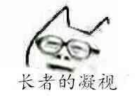

政治向（和谐）
以下内容涉及不宜公开讨论的政治内容＠％……＆＃＆……＃
把影视明星等公众人物P成表情包已经是众人习惯的事情。
但还有人，比较作死将政治领导人物P成了表情，加之领导人本身的背景，不得不说政治意味浓厚啊_(:з」∠)_
国外的奥观海和三胖，参见暴走表情人物。而国内的主要以下面两位为代表。（水表已拆）
根据相关法律法规以下内容不予显示，请点击按钮
习大大

领导人在公众场合不经意留下的表情有时候真是耐人寻味啊...
江泽民（蛤蛤）
其实对于长者的梗我个人是不太懂的...也不太懂膜蛤是怎么流行起来的...但“图样图森破，上台拿衣服”，“和华莱士谈笑风生”这些梗相信不知道出处多少也听过。


作死完毕，匿